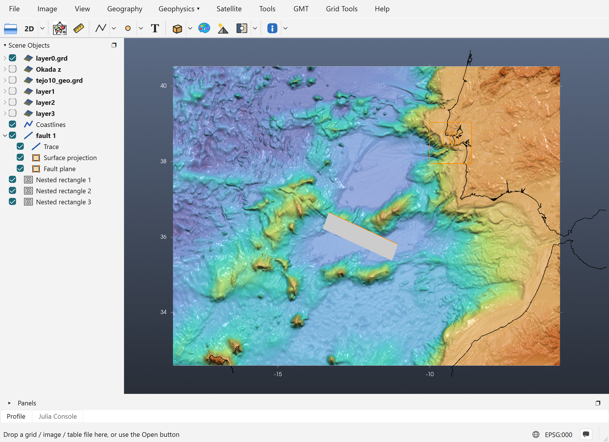
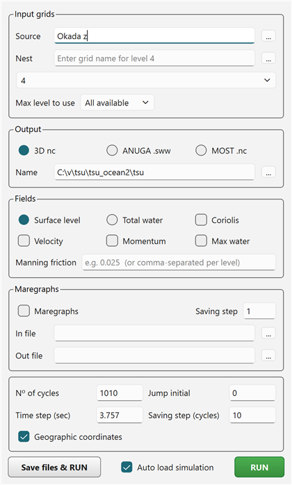

Tutorial: Running NSWING
NSWING is the tsunami propagation and inundation model that comes with GMT. It solves the shallow-water equations on a chain of nested grids. iGMT runs it in-process: it takes the grids straight from the window, shows a progress bar while it runs, and opens the result in the Aquamoto viewer when it finishes.
This tutorial uses a real set-up: a thrust source SW of Cape São Vicente, with the wave followed into the Tejo estuary and Lisbon.
1. What the window must hold
NSWING takes everything from one iGMT window:
| Role | Grid in the window | How to get it |
|---|---|---|
| Bathymetry (layer0) | the base grid, here layer0.grd (2′, −18.45/−5.72/32.6/40.52) | File → Open |
| Source (initial sea surface) | Okada z | Elastic Deformation tutorial |
| Nested levels | layer1, layer2, layer3 | Nested Grids tutorial |
In this example the levels have cells of 12″, 2.4″ and 0.48″ (about 370 m, 74 m and 15 m), and they were filled from a 10 m model of the Tejo estuary (tejo10_geo.grd).

A set-up like this takes a lot of work. Save it with File → Save Session… before you run anything. The window shown here was loaded from such a session.
2. Open the NSWING dialog
In the Geophysics menu, switch to the Tsunamis discipline (Geophysics › → Tsunamis), then pick NSWING tsunami…. The dialog does not block the window. It stays open across any number of runs until you close it. Minimising it parks it as a row in Scene Objects, and a double-click on that row brings it back.

Most of it is already filled in from the window, as described below.
3. Input grids
- Source is set to the window's Okada z grid. The ... button picks a source grid file instead.
- Nest and the level list below it hold the nesting chain. Each filled layerN of the window shows up as "N – level ready to use". The list then opens on the next free level (4 here), where you can add one more level from a file. A nest file typed or picked here is checked against its parent at once. If it breaks the nesting rule, a message gives the corner values it should have.
- Max level to use limits how deep a run goes. level 1 runs only the bathymetry and layer1, which is a quick way to test the set-up before paying for the finest grid. The default is All available.
4. Output
- 3D nc writes the whole simulation to one 3-D netCDF file, with one slice per saving step. This is the format the Aquamoto viewer opens.
- ANUGA .sww writes ANUGA's netCDF format instead.
- MOST .nc is not supported by the NSWING version that ships with GMT. Choosing it gives an error.
- Name is the full path of the output file. Use the ... button to choose where it goes.
Fields
Fields can only be set for the 3D nc output.
| Option | What it writes |
|---|---|
| Surface level / Total water | The sea-surface height, or the total water depth. |
| Max water | An extra grid with the maximum water level reached at each node over the whole run: the usual inundation and hazard map. |
| Velocity | Velocity grids (suffixes _U, _V). |
| Momentum | Momentum grids. |
| Coriolis | Adds the Coriolis effect to the equations. Only worth it for long propagation distances. |
| Manning friction | Bottom friction coefficient, e.g. 0.025. One value for all levels, or comma-separated values, one per level. |
5. Maregraphs (virtual tide gauges)
Tick Maregraphs to record the water height through time at chosen points. In file is a plain text file with one lon lat pair per line, for example:
-9.27 38.63
-9.20 38.685
-9.16 38.69These three points are off Costa da Caparica, in the Tejo channel at Belém, and on the Lisbon waterfront. Put gauges in the water and inside the finest grid that covers them. Out file receives the time series. Saving step records one sample every that many time steps.
6. Run parameters
| Field | Meaning |
|---|---|
| Time step (sec) | The model time step. It is prefilled with a stability (CFL) estimate from the bathymetry: Δt = Δx / √(g·|z_min|) / 2, with Δx in metres. Here it is 3.757 s for the 2′ grid with a deepest point of about 6.2 km. Increasing it can make the run unstable. |
| Nº of cycles | How many time steps to run. Simulated time = cycles × time step: 1010 × 3.757 s ≈ 63 minutes, enough for the wave to reach Lisbon from this source. |
| Saving step (cycles) | Write a slice every that many cycles. 10 gives 1010 / 10 = 101 slices, one every 37.6 s of model time. |
| Jump initial | Write nothing before this model time, in seconds. Useful when the first part of the run, before the wave reaches the area of interest, is not needed. |
| Geographic coordinates | Ticked automatically when the grids are longitude/latitude. |
The run's cost grows with the number of nodes in the finest levels, and those levels also need shorter internal time steps. With a 0.48″ level of 1595 × 1480 nodes, a run takes a long time. To test the set-up, use Max level to use or fewer cycles first.
7. Run
RUN first checks the set-up and stops with a message if something is wrong:
- no Source grid;
- a level that is still blank (all zeros; fill it with Transplant 2nd grid…);
- a level that does not nest in its parent.
It then starts NSWING in the background. A progress bar shows how far the run has got, and the window stays usable. Save files & RUN does the same with files on disk. It writes the bathymetry, the source and every level to a folder you choose, then either shows the equivalent gmt nswing … command line or runs it as a separate process. Use it to keep a run that can be repeated outside iGMT.
When Auto load simulation is ticked (the default), the finished 3-D netCDF opens in a new iGMT window in the Aquamoto viewer, where you can step through the slices, animate them and look at the maximum water level.
Related tutorials
- Elastic Deformation: making the Source.
- Nested Grids: making the levels.
- Catalina Benchmark 1: an NSWING run checked against an analytical solution.